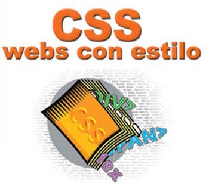

Cascading Style Sheets (CSS) is a style sheet language used for describing the presentation semantics (the look and formatting) of a document written in a markup language. Its most common application is to style web pages written in HTML and XHTML, but the language can also be applied to any kind of XML document, including plain XML, SVG and XUL. CSS is designed primarily to enable the separation of document content (written in HTML or a similar markup language) from document presentation, including elements such as the layout, colors, and fonts.[1] This separation can improve content accessibility, provide more flexibility and control in the specification of presentation characteristics, enable multiple pages to share formatting, and reduce complexity and repetition in the structural content (such as by allowing for tableless web design). CSS can also allow the same markup page to be presented in different styles for different rendering methods, such as on-screen, in print, by voice (when read out by a speech-based browser or screen reader) and on Braille-based, tactile devices.
CSS has a simple syntax and uses a number of English keywords to specify the names of various style properties. A style sheet consists of a list of rules. A declaration-block consists of a list of declarations in braces. Each declaration itself consists of a property, a colon (:), and a value. If there are multiple declarations in a block, a semi-colon (;) must be inserted to separate each declaration.[2] In CSS, selectors are used to declare which part of the markup a style applies to, a kind of match expression. Selectors may apply to all elements of a specific type, to elements specified by attribute, or to elements depending on how they are placed relative to, or nested within, others in the document tree.
Si realzaras un
sitio web a una empresa añade en la zona del pie datos como:
Dirección fisica - cuidad -
casilla - telefono - fax - algún correo